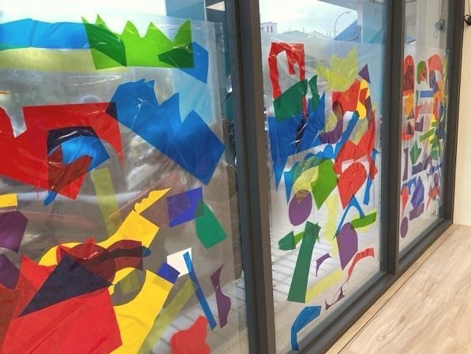
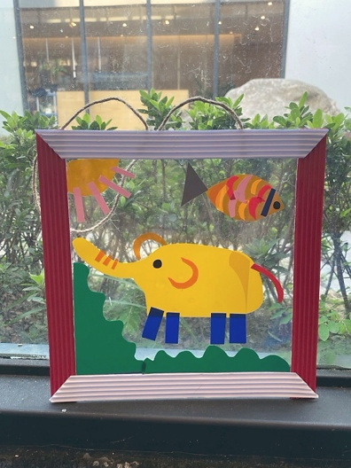

創作技法說明
使用點、線、幾何形與重複元素 , 如圓形貼紙、馬賽克碎紙、色塊蓋印等材料 , 探索「有節奏」的構圖法。孩子會不自覺地創造「像音樂一樣」的視覺節奏 —— 漸強、間隔、突變、連續 —— 這些其實就是他內在節奏的視覺呈現。
9. 節奏構圖法 ( Rhythmic Composition Theory ) 透過形狀、顏色、空間距離的排列組合 , 讓孩子在創作中發展節奏感與組織邏輯。


使用點、線、幾何形與重複元素 , 如圓形貼紙、馬賽克碎紙、色塊蓋印等材料 , 探索「有節奏」的構圖法。孩子會不自覺地創造「像音樂一樣」的視覺節奏 —— 漸強、間隔、突變、連續 —— 這些其實就是他內在節奏的視覺呈現。
孩子在這個方法中，不只是使用材料或學習技巧，而是在嘗試中建立自己的判斷：我看見了什麼？我想怎麼改變？我可以用什麼方式表達？這些過程會慢慢累積成孩子面對世界的感受力、思考力與創造力。